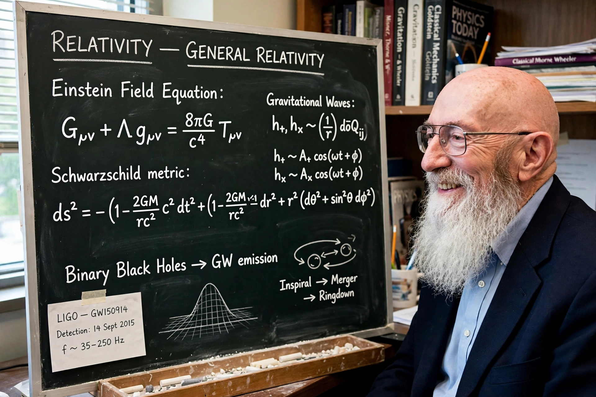

Kip Thorne
| Born | 1 June 1940, Logan, Utah, US |
|---|---|
| Known for | LIGO co-founder, black hole and wormhole physics |
| Awards | Nobel Prize in Physics (2017, with Rainer Weiss and Barry Barish) |

[Image: Photograph of Kip Thorne with his long white beard, smiling]Kip Stephen Thorne (born 1 June 1940) is an American theoretical physicist and writer, known for his contributions in gravitational physics and astrophysics and for co-founding the LIGO project, whose detection of gravitational waves earned him a share (with Rainer Weiss and Barry Barish) of the 2017 Nobel Prize in Physics.
A protégé of John Archibald Wheeler at Princeton, Thorne spent his career at Caltech, co-authoring the monumental textbook Gravitation (1973, 'MTW') and writing the bestseller Black Holes and Time Warps (1994). His research ranged over relativistic stars, black holes, wormholes and time travel; he has also advised Hollywood, as executive producer and scientific consultant on the film Interstellar (2014), whose black hole visualisation set new standards for physical accuracy.
LIGO and later work
Thorne championed laser interferometry at Caltech from the 1970s, co-founded LIGO in 1984 with Weiss and Ronald Drever, and led its theoretical programme (source modelling, data analysis strategies) for decades. After retiring from Caltech in 2009 he has worked on the physics of Interstellar and on 'the warped side of the universe' — outreach spanning film, poetry and art.